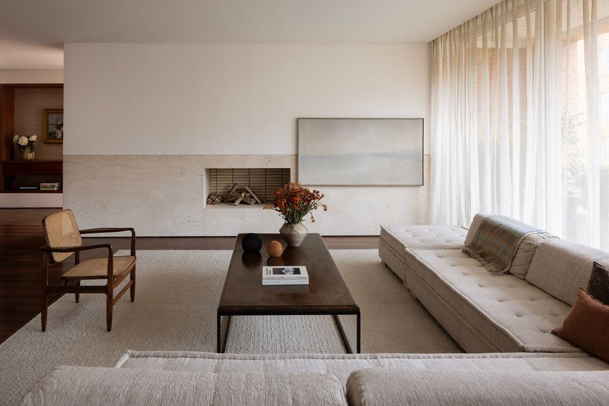
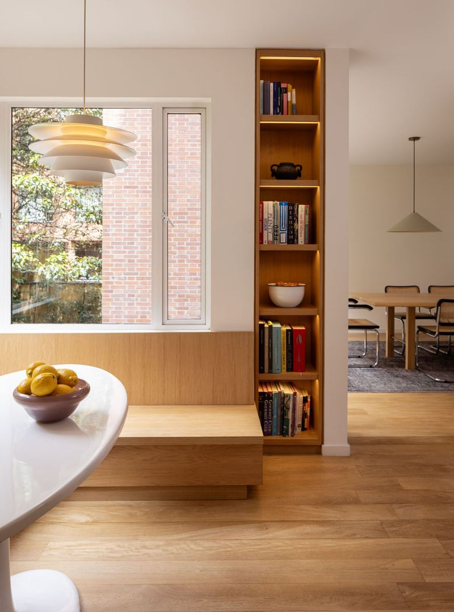
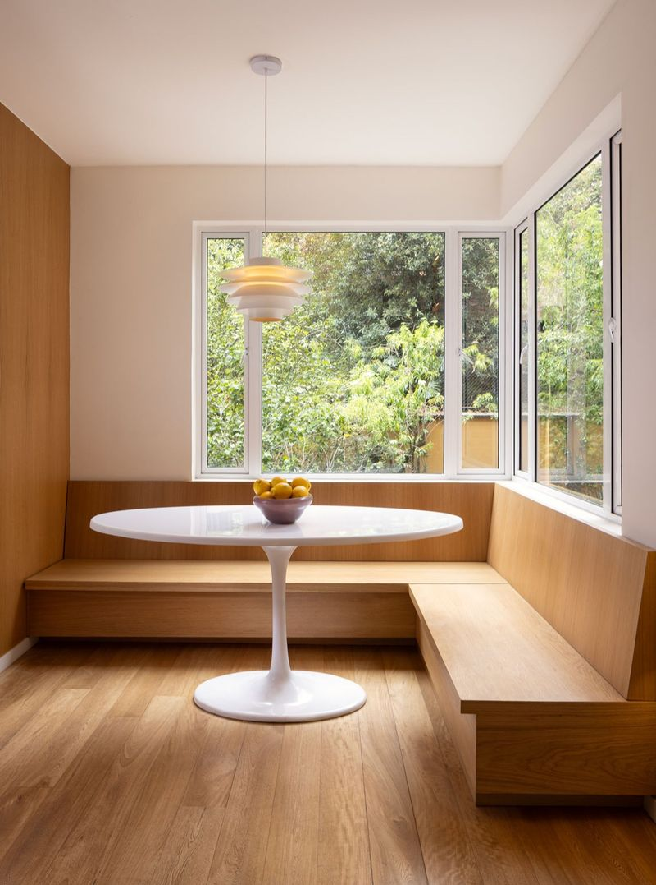
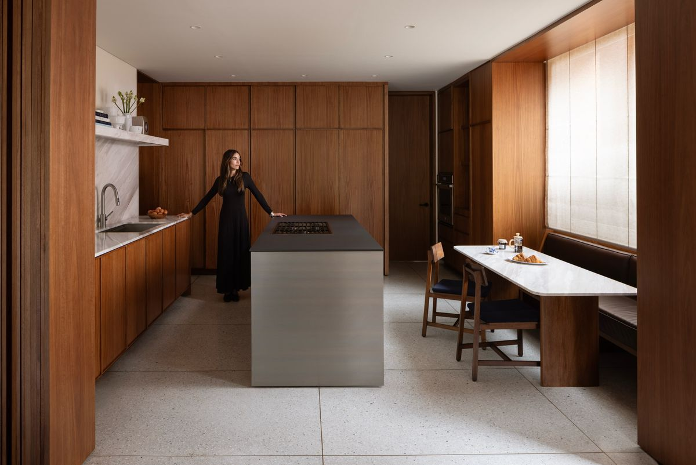
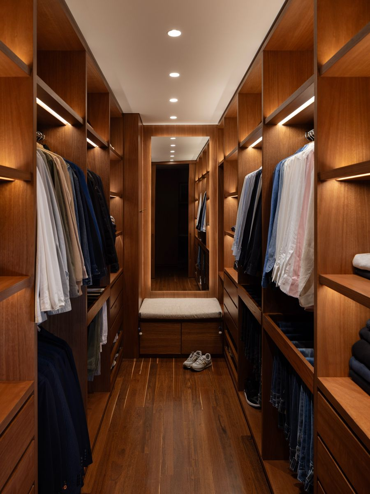
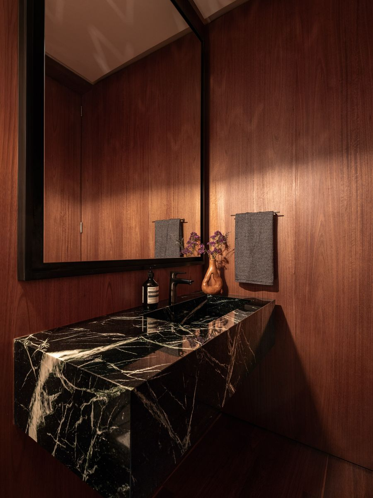
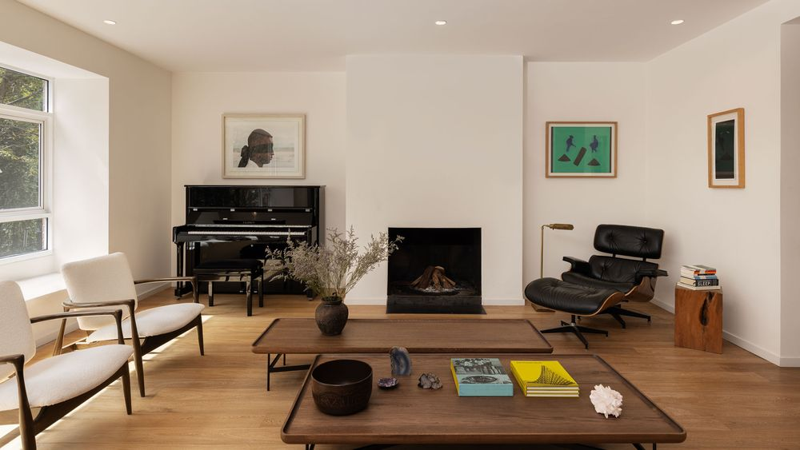
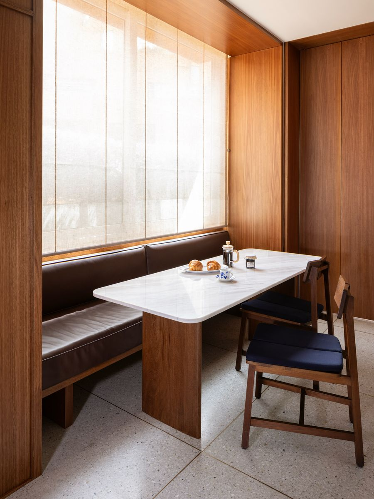

Apartamento DB · Sala01 / 05
Perfil
MIR estudio es un estudio de diseño y remodelación de apartamentos en Bogotá. Cada proyecto busca espacios que perduren en el tiempo, y por eso nuestra prioridad es usar materiales naturales, trabajo artesanal y el cuidado de cada detalle.
Nos gusta actualizar cada casa respetando su esencia y el carácter del espacio original, y que cada mueble, además de cumplir una función, aporte calidez y se sienta parte del hogar.
Servicios
- Diseño arquitectónico
- Diseño interior
- Acabados y materiales
- Mobiliario integrado
Colaboradores
- Santiago MuñozArquitectura
- Esteban DuqueConstrucción
- Pedro BermúdezMobiliario
- Simon BoschFotografía
Contacto
info@estudiomir.com
Instagram @estudiomir_
Bogotá, Colombia
Apartamento DB
Residencial
Bogotá, Colombia
Remodelación integral
En esta remodelación propusimos la cocina como parte central de la casa, un lugar que además de ser funcional fuera un espacio de encuentro para la familia, con muebles que no solo cumplieran una función sino que también aportaran calidez y se sintieran parte del mobiliario de la casa.
Por eso elegimos la madera, el granito y la piedra natural como protagonistas, presentes en pisos, paredes y detalles, para crear una atmósfera cálida y atemporal.
- Arquitectura
- Santiago Muñoz
- Diseño y acabados
- MIR estudio
- Construcción
- Esteban Duque
- Mobiliario
- Pedro Bermúdez
- Fotografía
- Simon Bosch
- Materiales
- Madera, granito, mármol y piedra natural
Construir una casa es primero pensar cómo queremos habitarla.
AntesAsí estaban los espacios antes de la obra
Apartamento Rosales
Residencial
Rosales, Bogotá
Edificio de 1989
Este apartamento estaba en su estado original de 1989, y el proyecto de reforma partió con la idea de actualizarlo respetando su esencia y el carácter del espacio original.
En la cocina usamos acero inoxidable, piedra y madera, y en el comedor auxiliar una mesa tipo Tulip y una banca de madera integrada crean un rincón lleno de luz natural para disfrutar la vegetación exterior.
- Diseño y acabados
- MIR estudio
- Fotografía
- Simon Bosch
- Materiales
- Madera, piedra natural y acero inoxidable
AntesAsí estaban los espacios antes de la obra